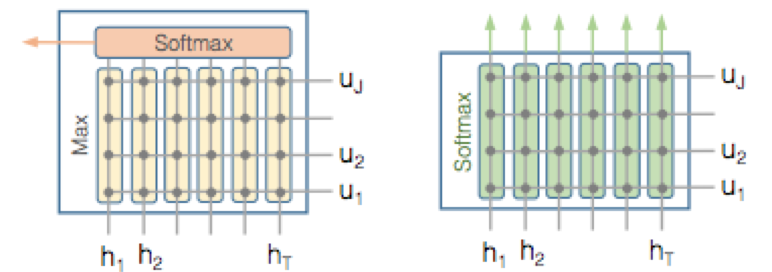
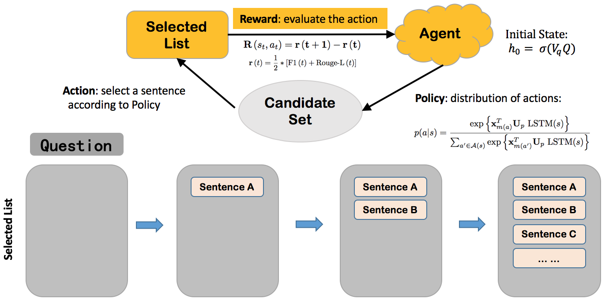

Teach Machines to Learn Main Content for Machine Reading Comprehension
Problem
Machine reading comprehension (MRC) aims to extract answers from a set of passages according to a question. Given a question, a large number of candidate passages could be involved. Therefore, how to identify answer-related content becomes a critical issue.
Inspiration
Ideally, an MRC model shall follow the RC process of human beings. That is, human beings may first read the given question, and then go through the whole passages to identify the question-related contents, and finally conclude the answer. The attention of human beings should focus on the question-related sentences during the whole process.
Main Work
MC-MDP consists of an encoding step which employs attention mechanism to obtain question-aware representations for the question and sentences, and a MDP step for constructing the main content sequence:
- First, Question-awared passage sentences representations are learned at this step:

- Second, a main content construction module is modeled by Markov-Decision-Process and the agent is trained by policy gradient to predict a sequence of key sentences, which is called Main Content in our approach.
main content selection module is modeled by MDP and trained by policy gradient:

- At the on-line time, the agent selects the sentences from the passages according to the learned representations and the policy function.
Conclusion
- We define a sub-task in multi-passage MRC, which is aimed at filtering out valuable information from massive texts according to the question.
- we implement an end-to-end model called MC-MDP, which can learn the main content in passages and RL algorithm was proposed to learn the model parameters.
- Experiments show that MC-MDP can outperform the baselines through selecting the sentences containing the answers with high precision
Date
Paper